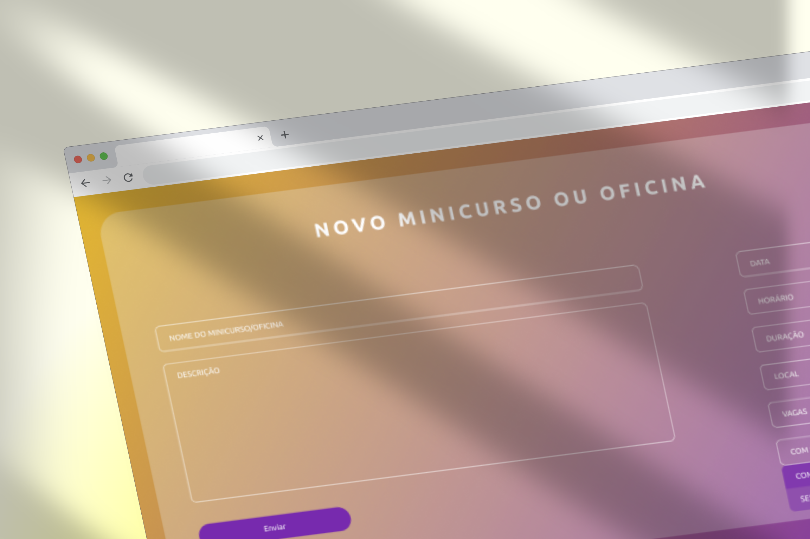
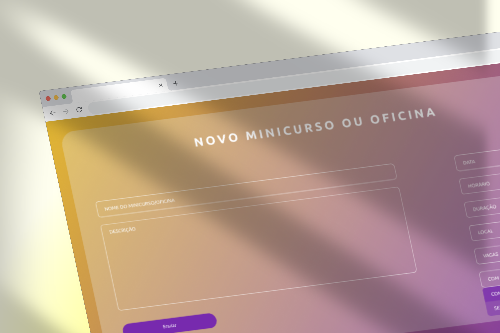

Certificadora 3
Este projeto foi idealizado e desenvolvido para a disciplina Certificadora de Competência 3 da universidade, tendo como objetivo reunir os conhecimentos adquiridos até aquele dado semestre e aplicá-los em um projeto real.

Para este caso, era necessário criar um sistema que auxiliasse o projeto Meninas Digitais em atividades diárias,
de modo a agilizar processos e concentrar informações. Dentre várias opções ofertadas e após conversar com as
integrantes e a professora orientadora, chegou-se a conclusão que seria desenvolvido um
sistema de controle para minicursos e oficinas,
algo que auxiliaria no compartilhamento de informações e gerenciamento de dados.
Tendo isso em vista, após o levantamento de requisitos, criação do escopo e validação com o cliente foi possível
projetar o design levando em conta a fácil usabilidade e a navegação intuitiva.


O design foi concluído sem grandes empecilhos para sua criação e aprovação, tornando possível que a codificação
fosse iniciada de modo a não atrasar o cronograma completo criado inicialmente.
Toda a identidade visual do projeto Meninas Digitais foi mantida, baseando-se,
principalmente, no roxo e no amarelo com tons entre essas duas cores e trabalhando com o degradê que se faz
marcante nas redes sociais já existentes.
“É como ter um organizador pessoal que deixa tudo pronto para você se concentrar no que realmente importa: aprender e compartilhar conhecimento”


 
